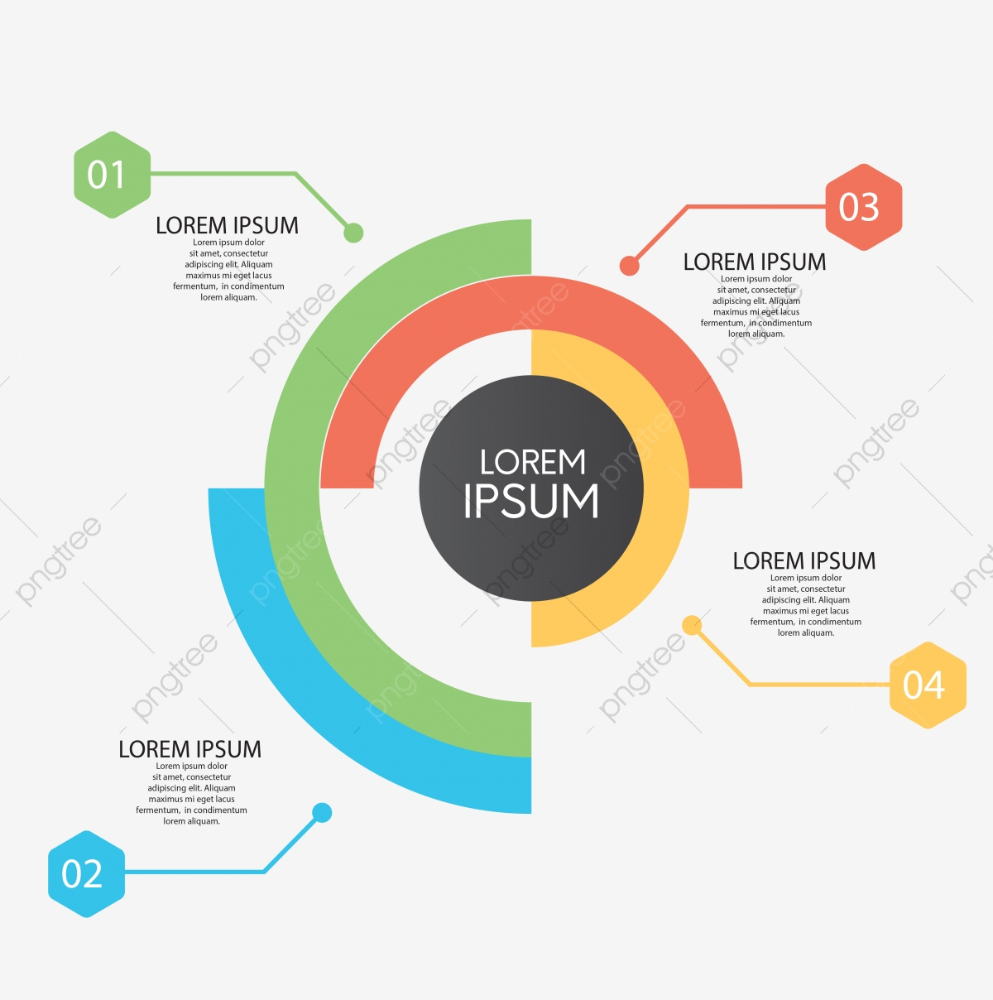

Seattle,Washington 98109
greysloan@gmail.com
123456789
Katie Bryce
Katie competes in pageants and her talent is rhythmic gymnastics. She was admitted into SGH for seizures. It was later revealed that she was bleeding into her brain. She was operated on and is now fully healthy. Her doctors were Derek Shepherd and Meredith Grey. Meredith described her as a pain in the ass. Katie even paged Meredith as 911 because she was bored. She was mentioned in Season 5, Elevator Love Letter, when Derek had her CT scans and other patients' scans from all of their surgeries stuck to the walls of an elevator.
Derek performed surgery on Katie and saved her life. Katie ends up coming back to the hospital 10 years (and 12 seasons) later in another episode when she starts experiencing more seizures. Derek is gone by that point (RIP, McDreamy!!). Katie goes to Meredith wondering what happened to him, and Meredith doesn't tell her right away.
